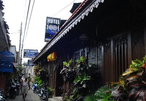

EDU Hostel Jogja adalah tempat ideal untuk memulai eksplorasi di Yogyakarta
semua kamar tamu memiliki sejumlah kenyamanan seperti shower, ruangan bebas rokok, televisi LCD/layar plasma, AC. Terletak dekat adalah Bakpia Pathuk 25, Rumah Sakit PKU Muhammadiyah, Museum Sono Budoyo.
Alamat : Jl Let Jen Suprapto No. 17, Ngampilan, Wirobrajan, Yogyakarta
Venezia Garden Hotel Jogja(bintang1)
Venezia Garden Hotel Jogja
Daftar Hotel Bintang 1 Yogyakarta urutan kedua
Venezia Garden Hotel terletak di dekat atraksi populer kota ini seperti Gereja Abdi Ngadinegaraan, Kraton Jogja, Taman Sari. Venezia Garden Hotel memiliki kamar tidur yang semuanya dirancang dengan citarasa tinggi untuk menyediakan kenyamanan seperti televisi, TV satelit/kabel, shower, meja tulis, AC. Sepanjang hari Anda dapat menikmati atmosfir santai dari taman, kolam renang (luar ruangan), kolam (anak).
Alamat :Jl. Surami nomor 55

Hotel 1001 Malam(bintang 1)
Hotel 1001 Malam
Daftar Hotel Bintang 1 Yogyakarta urutan ketiga
Suasana hotel yang romantis dan cozy memang buat yang pertama kali datang ke hotel ini agak sulit menemukannya, karena terletak di gang kecil di sosrowijayan wetan, malioboro. tapi begitu sudah masuk di lobby, suasananya menjadi beda, bersih. kamar lumayan besar dan bersih, full ac, dan tertata seperti layaknya gallery seni. kami cukup puas menginap di sini, karena dekat dengan malioboro, tempat makan, dan berbelanja.